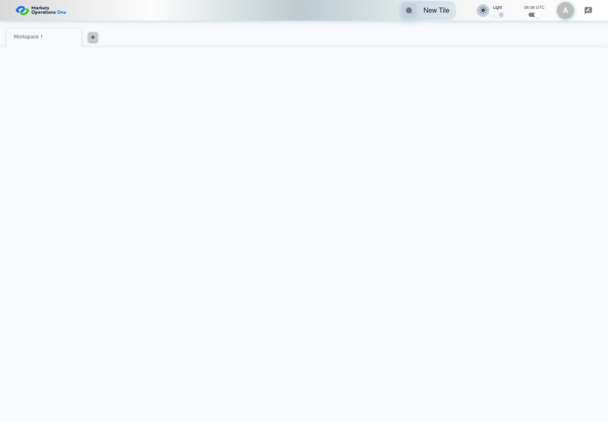
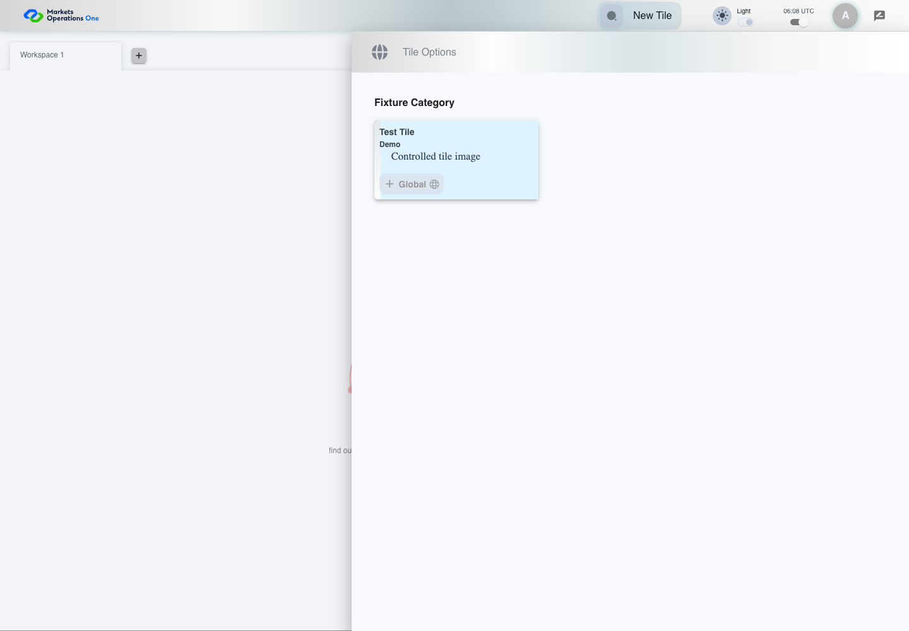

UI-CAT-016 choose the active theme image
PASS · application/run-050/ui-cat-016-choose-the-active-theme-image-6e680236780e-attempt-1 · ACTUAL_APPLICATION_LOCAL_SERVICES
Actual current React shell. Controlled login, validation, and activity renewal responses supply UI-USER-01, catalog, and entities. A controlled SystemJS React container displays routes and parameters. Local fixture SVGs replace catalog images. Identity, entitlements, and business tenant behavior are not established.
2026-10-22T06:08:10.111Z to 2026-10-22T06:08:12.317Z
Assertions and result · Artifact manifest · Exact run inputs and source hashes
Result SHA-256:7c5f3ec8caa8d79cbc01423ea385171e8911489816af85297af2bead3da7959dScreenshot capture: CAPTURED. Named frames: 6.
Step screenshot evidence: COMPLETE. 5/5 canonical steps have execution screenshots.
Canonical step timeline
Given User A is authenticated as fixture UI-USER-01 with the case-specific permissions
Execution: PASSED.
1. step-01 Visible state after step 1: Given User A is authenticated as fixture UI-USER-01 with the case-specific permissions
2026-10-22T06:08:11.389Z · 1440×1000
Step: /Users/lushevol/code/github/ratan-release-impact/workbench/tasks/ui-test-coverage-20261022/test-cases.md:6750
SHA-256:fcdb7e886745751817c5a9e551fd47a62899d6497092ca8f80a5c9e3d9e7d6d1And Test Tile supplies dark and light image paths
Execution: PASSED.
2. step-02 Visible state after step 2: And Test Tile supplies dark and light image paths
2026-10-22T06:08:11.467Z · 1440×1000
Step: /Users/lushevol/code/github/ratan-release-impact/workbench/tasks/ui-test-coverage-20261022/test-cases.md:6751
SHA-256:fcdb7e886745751817c5a9e551fd47a62899d6497092ca8f80a5c9e3d9e7d6d1When User A clicks switch named "Theme Switch" inside the shell application bar
Execution: PASSED.
3. step-03 Visible state after step 3: When User A clicks switch named "Theme Switch" inside the shell application bar
2026-10-22T06:08:11.633Z · 1440×1000
Step: /Users/lushevol/code/github/ratan-release-impact/workbench/tasks/ui-test-coverage-20261022/test-cases.md:6752
SHA-256:79c290d71ba08fdf584d2b077a387d4d1b2eb51508086d040a3b71fb8f6e5debAnd User A clicks section with text "New Tile" inside the shell application bar
Execution: PASSED.4. step-04 Visible state after step 4: And User A clicks section with text "New Tile" inside the shell application bar
2026-10-22T06:08:11.775Z · 1440×1000
Step: /Users/lushevol/code/github/ratan-release-impact/workbench/tasks/ui-test-coverage-20261022/test-cases.md:6753
SHA-256:cea7a157cc7fc24dca5a104384275397ea2ba69c0ca5be171c2e6f8cfdf921f4Then the computed background image on the main element within section with text "Test Tile" inside the tile group with subtitle "Demo" in the fixture category inside the right drawer titled "Tile Options" equals the fixture imageLightTheme URL
Execution: PASSED.
5. step-05 Visible state after step 5: Then the computed background image on the main element within section with text "Test Tile" inside the tile group with subtitle "Demo" in the fixture category inside the right drawer titled "Tile Options" equals the fixture imageLightTheme URL
2026-10-22T06:08:11.855Z · 1440×1000
Step: /Users/lushevol/code/github/ratan-release-impact/workbench/tasks/ui-test-coverage-20261022/test-cases.md:6754
SHA-256:cea7a157cc7fc24dca5a104384275397ea2ba69c0ca5be171c2e6f8cfdf921f4
Additional named frames

The final visible state after the named test assertions.
2026-10-22T06:08:11.986Z · 1440×1000Step: Test source: /Users/lushevol/code/github/ratan-release-impact/workbench/e2e/audit-specs/catalog-profile-expanded.spec.ts:190
SHA-256:
cb176e61caada683cdf9fa9db40c4a62673ea3fc839cb94e534706b099b89138Screenshots establish visible state only. Assertions and traces support functional claims.